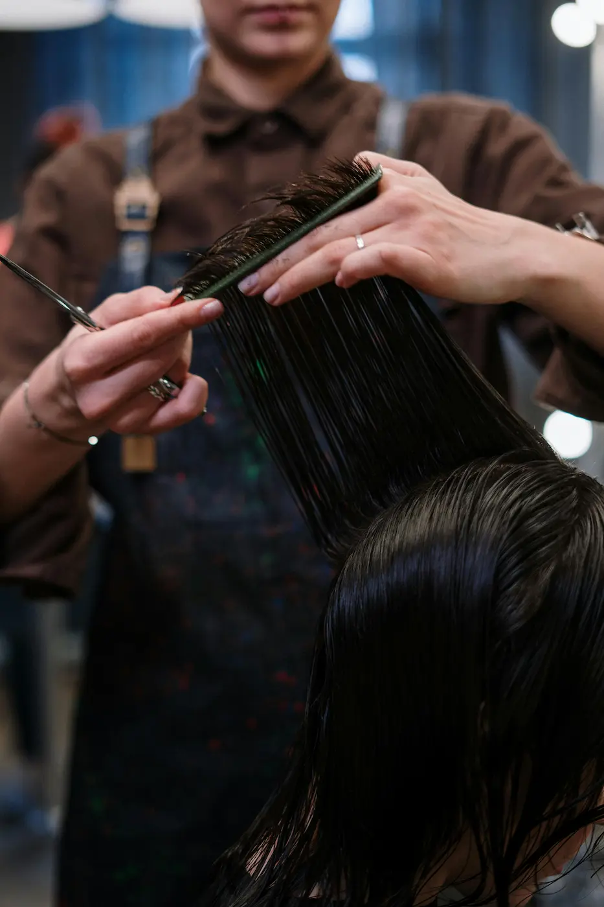
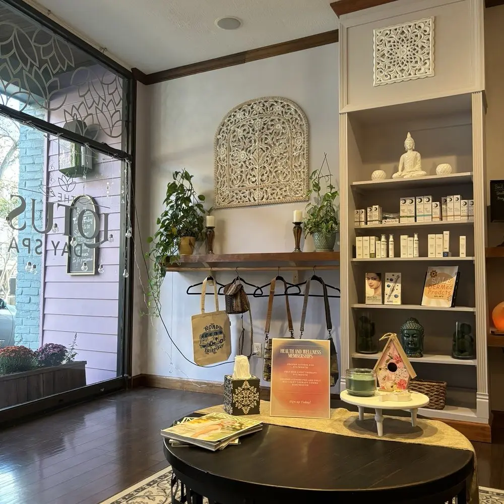
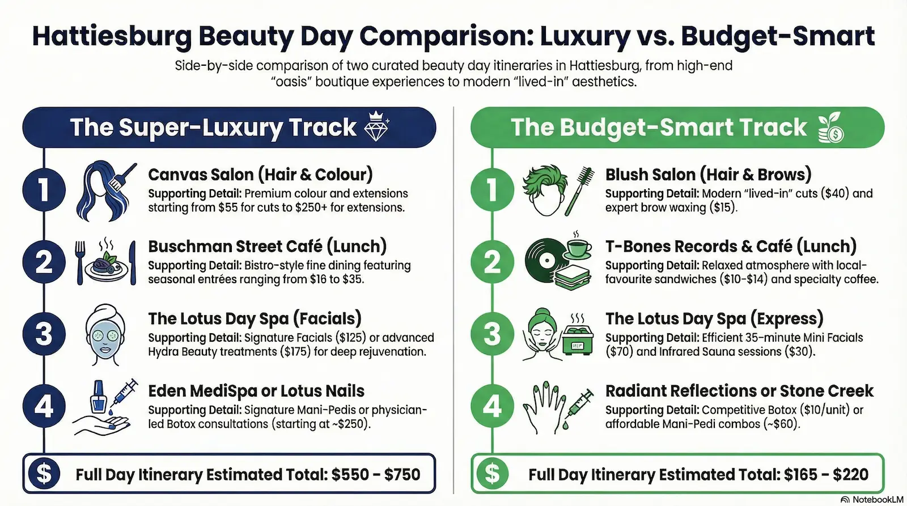

Hattiesburg has a beauty secret that most people outside the Pine Belt haven't figured out yet. While the national chains sit in their strip malls off Highway 98 turning out forgettable blowouts, the city's independent salons, downtown day spas, and locally owned med spas have quietly built something that competes with what you'd find in any mid-size Southern city — at a fraction of the attitude and, often, the price. If you've been meaning to treat yourself, or you're visiting and want to make a day of it, this itinerary is for you. It's not a list. It's a full day, designed around the best independent spots in town, with two tracks: one if you want the full luxury experience, and one if you want to do it smart without skimping on quality.
How This Itinerary Works
- Two tracks at every stop — a Super-Luxury option and a Budget-Smart option. Choose one track and stick with it, or mix and match based on your priorities.
- Book ahead. Most of these spots, especially The Lotus and Canvas Salon, fill up quickly. Call or book online at least a week in advance. Some require a deposit to hold your appointment.
- Morning start — Hair salons. Midday — Lunch break. Afternoon — Spa and facial. Late afternoon — Nail care or med spa. The day is built to flow naturally without rushing.
Morning: Start With Your Hair

Hattiesburg's independent salons have earned their reputations one honest haircut at a time.
The morning is for your hair — and in Hattiesburg, the right choice at this hour sets the tone for the whole day. Give yourself a generous window. A color service plus cut and style is a two-to-three hour commitment at any quality salon, and you don't want to start the day rushed.
Canvas Salon — East Front Street
Canvas has staked its claim as Hattiesburg's premier boutique color salon, and the reputation is earned. Specialists here are trained in DevaCut for naturally curly hair, advanced balayage, and luxury hand-tied extensions. The space itself has that "oasis" quality — quiet, intentional, and a little bit far from the chaos of a busy commercial strip. Stylists like Brandi and Lanie have the kind of followings that make same-week appointments a genuine challenge. If you're planning a significant color transformation or want seamless extensions done right, this is where you go in Hattiesburg. Don't expect a budget-friendly ticket — but do expect the result to last.
Haircut from $55 · Balayage/ombré from $160 · Extensions from $250+
Blush Salon — Buschman Street
Blush is the salon equivalent of a well-kept secret among Hattiesburg locals who don't need the prestige but absolutely expect the craft. The specialty here is "lived-in" color — techniques that look natural, grow out gracefully, and don't require a touch-up every four weeks. Stylists Bianca and Marcus have earned genuine word-of-mouth loyalty for cuts that are styled to actually work with your hair rather than against it. The vibe is modern and approachable, the booking system is easy, and the pricing sits meaningfully below the boutique tier. A solid haircut here runs $40 — and for a full color-and-cut combo, you're looking at a very reasonable entry point compared to the larger market.
Haircut from $40 · Lived-in color + cut from $250 · Brow wax $15
A note worth making here: both salons are independent, locally owned, and staffed by stylists who have built their books through actual skill and word of mouth — not marketing. That's worth something in a market where chain salons consistently underdeliver. When you book at either of these places, you're supporting a real Hattiesburg business, and you'll feel the difference in the chair.
"The Abbey is a 4,000-square-foot destination — a salon and boutique under one roof where you can walk out with a new cut, new color, and something to wear with it."
If neither Canvas nor Blush suits your specific needs — say, you're looking for a one-stop experience that includes waxing, makeup, and a clothing boutique all in one visit — The Abbey Salon & Boutique on 22 98th Place Boulevard is worth your time. It runs over 4,000 square feet, carries a serious lineup of professional product lines (Redken, Kevin Murphy, Olaplex, Moroccanoil), and has 10-plus stylists covering specialties from curly hair to master color. It's a West Hattiesburg destination rather than downtown, but for the right visit, it's unmatched in scope.
Midday: Lunch Break
This is the moment to breathe. You've just spent the morning in a chair, your hair is fresh, and the afternoon holds a spa treatment you don't want to rush into on an empty stomach. Downtown Hattiesburg and the surrounding blocks have a genuinely good lunch scene — here are two options worth walking to.
Buschman Street Café
Born from a longtime dream to create a bistro-style fine dining experience in Hattiesburg, Buschman Street Café is the go-to for a lunch that matches the tone of a luxury beauty day. The food is serious and the atmosphere is right — elegant without being stiff, with a menu that changes to reflect seasonal ingredients. Reviewers consistently call it the best special-occasion restaurant in the city. Make a reservation if you can; this place books.
Entrées $18–$35 · Reservations recommended
T-Bones Records & Café
T-Bones is the kind of place that earns its own category. It's a café inside a record store — vinyl lining the walls, cold brew on the counter, and a menu of sandwiches, wraps, and house-made pastries that punches well above its price point. The Greek Chicken Wrap and Harry's Triple Cheese Sandwich are local favorites. The coffee program is strong. The whole atmosphere is relaxed and unhurried, which is exactly what a mid-beauty-day break should feel like. Service is friendly, lines move, and the prices won't leave you feeling like lunch ate the spa budget.
Sandwiches $10–$14 · Coffee drinks $4–$7
Afternoon: Spa and Facial

The Lotus Day Spa has anchored downtown Hattiesburg's wellness scene for over a decade.
The early afternoon is for your skin and your nervous system. Whatever you booked this morning — color, cut, or both — your scalp and your mood are ready for something quieter. The downtown area has a legitimately strong spa scene, anchored by a day spa that has been at the heart of Hattiesburg wellness for over a decade.
The Lotus Day Spa — 221 W. Pine Street, Downtown
The Lotus is the anchor of Hattiesburg's independent wellness scene, and it has earned that position over ten-plus years of consistent, client-focused service. Located in the heart of historic downtown on West Pine Street, the spa offers a full menu of massage therapies, facials, body treatments, nail services, and signature spa day packages. For this slot in the itinerary, book the Lotus Signature Facial ($125) — a full 60-minute treatment that includes a personalized skin analysis, deep cleanse, extractions, and a finishing mask. If you want to push further, the Hydra Beauty Facial ($175) adds advanced hydration technology and is a genuine step up for dry or mature skin. The Lotus also uses Nano Pen technology on certain services to dramatically increase serum absorption. The spa has won Best Spa of the Pine Belt and has the kind of loyal local following that doesn't need a marketing budget.
Lotus Signature Facial $125 · Hydra Beauty Facial $175 · Lotus Escape Package (facial + massage) $150
The Lotus Day Spa — Express Facial Option
The same address, the same spa, the same quality team — but a different point of entry. The Lotus Mini Facial is a 35-minute treatment ($70) designed as a "quick glow-up," covering a gentle cleanse, exfoliation, and a tailored mask. It's the move if you want the Lotus experience without the full-afternoon commitment or cost. You still get the atmosphere, the skilled hands, and the downtown location. You're simply choosing a more targeted version of the service. Book it, tip appropriately, and save the difference for the next stop.
Lotus Mini Facial from $70 · Infrared Sauna session (30 min) from $30
A practical note: The Lotus is a busy downtown spa that regularly sells out on weekends. They do require a deposit — typically 25–50 percent of service cost — to hold your appointment. That deposit is non-refundable if you cancel late, so treat the booking seriously. Walk-ins are occasionally possible on slower weekdays, but for a beauty day like this, you want to know your slot is confirmed before you build the rest of the schedule around it.
Your Beauty Day at a Glance

Late Afternoon: Nails, or Go Med Spa
This is where the day splits the most decisively. If you're finishing on nails — the perfect cap to a full beauty day — your options in Hattiesburg range from a true spa pedicure experience to a straightforward, well-executed nail salon with serious technical chops. If your skin concerns run deeper and you've been thinking about botox, laser treatments, or a more clinical approach to aging, the late afternoon is the right moment for a med spa consultation.
Option A: The Lotus — Signature Mani-Pedi
If you did the express facial at The Lotus this afternoon, now is the time to upgrade the nail experience at the same location. The Lotus Signature Pedicure is a therapeutic treatment, not just polish — it includes soaking in vitamin-infused aromatic salts, deep exfoliation, paraffin wax for skin softness, and a professional finish. The Gel-X nail system is available here as a lighter, less damaging alternative to traditional acrylic extensions. The whole experience is designed as a health service as much as a beauty service, and the spa-quality atmosphere makes a significant difference.
Signature Pedicure ~$100 · Gel-X Full Set ~$80 · Signature Manicure ~$60
Option B: Timeless Aesthetics & Wellness — 221 W. Pine Street, Suite 20
For the luxury track that skews clinical, Timeless Aesthetics & Wellness is Hattiesburg's most complete med spa destination — and it happens to sit on the same West Pine Street block as The Lotus, making it a natural same-day pairing. The practice is co-owned and operated by board-certified nurse practitioners Lauren Garner and licensed esthetician Rachel, who specialize in injectables (Botox, Dysport, dermal fillers), advanced facials, laser hair removal, skin resurfacing and tightening, and hormone replacement therapy (BHRT). The philosophy here is personalized treatment plans that enhance natural features rather than overhaul them — results that look refreshed, not obvious. For a beauty day late-afternoon slot, a Botox consultation or a Glo2Facial is the move: the Glo2Facial uses oxygenation technology to deliver immediate visible brightness without any downtime. A Face Reality acne facial series and a dedicated Wedding Facial Series are also available for clients with specific goals. If you've been thinking about injectables and want them done by providers with genuine clinical depth, this is the right address in Hattiesburg.
Botox/Dysport from ~$11/unit · Glo2Facial from ~$150 · Laser hair removal packages available · (601) 498-7709
Option A: Ruby Nails — 214 Main Street, Downtown
Ruby Nails sits right in the heart of downtown Hattiesburg on Main Street — a Neighborhood Favorite across five downtown neighborhoods on Nextdoor, and consistently one of the highest-rated nail destinations in the Pine Belt. The salon specializes in acrylic nails, dipping powder, and custom nail designs, and has built a devoted following on one simple promise: fast, precise work without skimping on quality. Multiple reviewers note they were seated within minutes and left with nails that held for over a week. The atmosphere is relaxed, the staff is professional and friendly, and appointments are recommended but walk-ins are often welcome. Open six days a week including Saturdays.
Gel pedicure from ~$35 · Acrylic full set from ~$45 · Mani-Pedi combo from ~$65 · (601) 602-4858
Option B: Radiant Reflections MedSpa
For the budget-smart traveler who still wants a med spa experience, Radiant Reflections has been serving the greater Hattiesburg area for over 12 years with a physician-directed approach that competes with larger markets. Hattiesburg Clinic Dermatology South is particularly noted for its Botox pricing — regular "Botox days" at $10 per unit make injectables accessible in a market where demand usually keeps prices high. For regenerative facials, laser treatments, or a weight-loss consultation, Radiant Reflections covers a broad spectrum at a transparent, competitive price point.
Botox days from $10/unit · Regenerative facial consultation free · (601) 268-7777
Why Hattiesburg's Independent Beauty Scene Outperforms the Chains
There's a reason this itinerary doesn't include a single chain salon, chain spa, or franchise med spa. The national beauty brands that have moved into Hattiesburg's commercial corridors offer predictability — you know roughly what you're getting, and you know the pricing menu will be laminated and non-negotiable. What you don't get is the kind of investment that comes from a stylist or esthetician who built their own book, who takes a cancellation personally, and who has to earn your return visit on the merit of the work.
Canvas Salon's colorists have the kind of technical training in balayage and lived-in techniques that you'd fly to Nashville for a few years ago. The Lotus Day Spa has survived over a decade in a downtown business environment that has seen many neighbors come and go — it's still there because clients come back. Blush built its reputation on cuts that actually hold their shape week after week. These places earn their followings the old-fashioned way, and Hattiesburg is quietly better for it.
The independent scene also concentrates in the most interesting part of the city. A beauty day routed through downtown Hattiesburg means walking the same blocks as the arts corridor, passing the historic depot, and spending money in establishments that are genuinely embedded in the life of the place. That matters more than it sounds.
Before You Book: Practical Notes
- Deposits are standard. The Lotus and most quality spas require a deposit (typically 25–50% of service cost) to hold your appointment. Non-refundable on late cancellations — plan accordingly.
- Book hair first, everything else second. Hair services set your start time. Build the rest of the day around your salon appointment, not the other way around.
- The Lotus fills quickly on weekends. If you're planning a Saturday beauty day, book at least a week out — ideally two. Same for Canvas Salon.
- Bring cash for tips. Every stylist and technician on this list works partly on gratuity. Standard tipping is 20%; for a service you love, 25% is a genuine kindness.
- Ask about packages before booking individual services. The Lotus offers multi-service packages (the Relaxation Escape at $225 covers massage, facial, and pedicure) that save money compared to booking each service separately.
- For med spa services: Both Timeless Aesthetics & Wellness and Radiant Reflections recommend a consultation before any injectable or laser treatment. Budget an extra 30 minutes and call ahead to schedule it as part of your visit.
Budget Summary
Whatever track you choose, the point is the same: Hattiesburg has the independent beauty infrastructure to support a full, genuinely satisfying wellness day — and most people inside and outside the city haven't figured that out yet. The chains are fine. The local spots are better. Now you know where they are.
Book Your Spots
Click any button to open the venue's website in a new tab.
Have a favorite Hattiesburg beauty spot we didn't mention? Send a tip to the Mississippi Lead editors — we cover the Pine Belt's independent businesses year-round at mississippilead.com.
← Back to Mississippi Lead